Durankulak
This is the Northernmost point of the Bulgarian seaside right before the border with Romania. It is known for its desert beaches, beautiful lake and small villages around. Where is Durankulak? Acknowledgements to Georgi Minev for some corrections and photos.
- 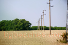
Wires - 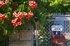
Exemplary Home - 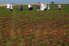
Work on the field - 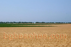
Golden land - 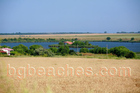
Durankulak's lake - 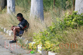
Kid - 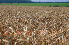
Wheat - 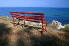
The bench with the perfect sea view
The beginning of the beach- 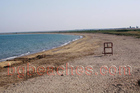
Endless beach - 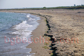
Durankulak's beach - 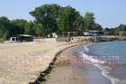
Bar - 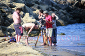
Scene - 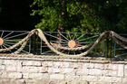
Fence - 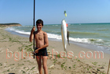
Durankulak Fisher - 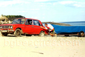
Lada on the beach - 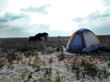
Carters, Attention! - 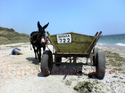
Cart on the beach - 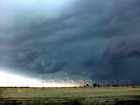
Storm at Durankulak - 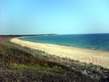
Border beach - 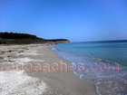
Romanian beach 2 - 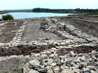
Durankulak Ruins - 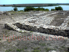
Durankulak Ruins 2 - 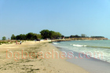
Another view of Durankulak's beach - 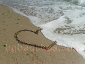
love